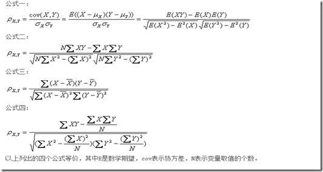
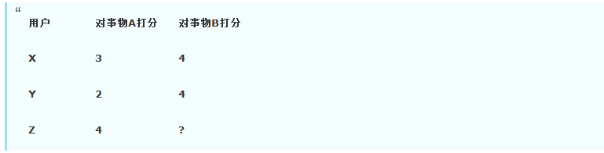

PearsonCorrelation
转自 DM张朋飞 CNBlogs
基于皮尔森相关系数的协同过滤算法
刚看到一新闻说很多互联网公司尤其是草根北京的都缺少有针对性的CTO，看完我感觉我要努力学好算法，争取自己创业。
PearsonCorrelation
两个变量之间的相关系数越高，从一个变量去预测另一个变量的精确度就越高，这是因为相关系数越高，就意味着这两个变量的共变部分越多，所以从其中一个变量的变化就可越多地获知另一个变量的变化。如果两个变量之间的相关系数为1或-1，那么你完全可由变量X去获知变量Y的值。
相关系数：考察两个事物（在数据里我们称之为变量）之间的相关程度。
如果有两个变量：X、Y，最终计算出的相关系数的含义可以有如下理解：
(1)、当相关系数为0时，X和Y两变量无关系。
(2)、当X的值增大（减小），Y值增大（减小），两个变量为正相关，相关系数在0.00与1.00之间。
(3)、当X的值增大（减小），Y值减小（增大），两个变量为负相关，相关系数在-1.00与0.00之间。
相关系数的绝对值越大，相关性越强，相关系数越接近于1或-1，相关度越强，相关系数越接近于0，相关度越弱。
通常情况下通过以下取值范围判断变量的相关强度：
| value | condtion |
|---|---|
| 0.8-1.0 | 极强相关 |
| 0.6-0.8 | 强相关 |
| 0.4-0.6 | 中等程度相关 |
| 0.2-0.4 | 弱相关 |
| 0.0-0.2 | 极弱相关或无相关 |
皮尔逊相关也称为积差相关（或积矩相关）是英国统计学家皮尔逊于20世纪提出的一种计算直线相关的方法。
假设有两个变量X、Y，那么两变量间的皮尔逊相关系数可通过以下公式计算：

从公式一可以看出只要两个变量的标准差都不为0相关系数才有意义。
该系数不足：需要指出的是，相关系数有一个明显的缺点，即它接近于1的程度与数据组数n相关，这容易给人一种假象。因为，当n较小时，相关系数的波动较大，对有些样本相关系数的绝对值易接近于1；当n较大时，相关系数的绝对值容易偏小。特别是当n=2时，相关系数的绝对值总为1。因此在样本容量n较小时，我们仅凭相关系数较大就判定变量x与y之间有密切的线性关系是不妥当的。
算法简介
我们先做个词法分析基于用户说明这个算法是以用户为主体的算法，这种以用户为主体的算法比较强调的是社会性的属性，也就是说这类算法更加强调把和你有相似爱好的其他的用户的物品推荐给你，与之对应的是基于物品的推荐算法，这种更加强调把和你你喜欢的物品相似的物品推荐给你。然后就是协同过滤了，所谓协同就是大家一起帮助你啦，然后后面跟个过滤，就是大家是商量过后才把结果告诉你的，不然信息量太大了。所以，综合起来说就是这么一个算法，那些和你有相似爱好的小伙伴们一起来商量一下，然后告诉你什么东西你会喜欢。
如何计算相似度，可采用皮尔森相关系数也可以用交集除以并集，本篇只介绍第一种。
如何找最近邻K呢？我们知道，在找和你兴趣爱好相似的小伙伴的时候，我们可能可以找到几百个，但是有些是好基友，但有些只是普通朋友，那么一般的，我们会定一个数K，和你最相似的K个小伙伴就是你的好基友了，他们的爱好可能和你的爱好相差不大，让他们来推荐东西给你（比如肥皂）是最好不过了。
何为和你相似呢？简单的说就是，比如你喜欢macbook,iphone,ipad，A小伙伴喜欢macbook,iphone,note2,小米盒子,肥皂，蜡烛,B小伙伴喜欢macbook,iphone,ipad,肥皂,润肤霜,C女神喜欢雅诗兰黛,SK2,香奈儿，D屌丝喜欢ipad,诺基亚8250,小霸王学习机那么很明显，B小伙伴和你更加相似，而C女神完全和你不在一个档次上，那我们推荐的时候会把肥皂推荐给你，因为我们觉得肥皂可能最适合你。
那么，如何找出这K个基友呢？最直接的办法就是把目标用户和数据库中的所有用户进行比较，找出和目标用户最相似的K个用户，这就是好基友了。
这么做理论上是没什么问题的，但是当数据量巨大的时候，计算K个基友的时间将会非常长，而且你想想就知道，数据库中的大部分用户其实和你是没有什么交集的，所没必要计算所有用户了，只需要计算和你有交集的用户就行了。要计算和你有交集的用户，就要用到物品到用户的反查表，什么是反查表呢？很简单，还是是上面那个AB小伙伴和C女神的例子，反查表就是喜欢macbook的有你，A，B，喜欢iphone的有你，B。。。就是喜欢某些物品的用户，有了这个表，我们就可以看出来，和你有关系的用户就只有A和B，D了，而C女神和你没有任何交集，所以不用去想C了。
这样，我们有了A和B,D，然后就分别计算A和B,D与你的相似度，不管用哪个相似性公式，我们算出来都是B和你更相似(在这个例子中，一般会用Jaccard来计算，因为这些向量不是特别好余弦化)，但如果此时我们的K设定为2，那么我们就得出了与你最相邻的基友是B和A。
这就是与目标用户最相邻的K个用户的计算。通过这K个用户来推荐商品了
好了，你的好基友我们也算出来了，接下来要向你推荐商品了。但是我们可推荐的商品有小米盒子，note2，蜡烛，润肤霜，肥皂这么四种，到底哪种才是你需要的呢？这里的算法就比较广泛了，我们可以不排序，都一股脑推荐给你，但这明显可能有些你不怎么感兴趣，我们也可以做一些处理，假如我们算出来A和你的相似度是25%，B和你的相似度是80%，那么对于上面这些产品，我们的推荐度可以这么来算
小米盒子: 10.25 = 0.25
note2: 10.25 = 0.25
蜡烛: 10.25 = 0.25
润肤霜: 10.8 = 0.8
肥皂: 10.8+10.25=1.05
好了，通过这个例子，你大概知道了为什么会推荐肥皂给你了吧，这就是基于用户的协同推荐算法的描述，总结起来就是这么几步
1.计算其他用户和你的相似度，可以使用反差表忽略一部分用户
2.根据相似度的高低找出K个与你最相似的邻居
3.在这些邻居喜欢的物品中，根据邻居与你的远近程度算出每一件物品的推荐度
4.根据每一件物品的推荐度高低给你推荐物品。
比如上面那个例子，首先，我们通过反查表忽略掉了C女神，然后计算出A和B,D与你的相似度，然后根据K=2找出最相似的邻居A和B，接着根据A,B与你相似度计算出每件物品的推荐度并排序，最后根据排好序的推荐度给你推荐商品。
这个算法实现起来也比较简单，但是在实际应用中有时候也会有问题的。
比如一些非常流行的商品可能很多人都喜欢，这种商品推荐给你就没什么意义了，所以计算的时候需要对这种商品加一个权重或者把这种商品完全去掉也行。再有，对于一些通用的东西，比如买书的时候的工具书，如现代汉语词典，新华字典神马的，通用性太强了，推荐也没什么必要了。
这些都是推荐系统的脏数据，如何去掉脏数据，这是数据预处理的时候事情了，这里就不多说了。
例：由于用户给电影打分有好有坏[1到5分]，而我们上面的例子中都是说的喜欢某件物品而没有说不喜欢的情况，所以首先，我们要把数据处理一下，简单的来做，我们可以认为3分以上的话代表这个用户喜欢这个电影，否则就是不喜欢，这样显得有点太死板了，我们也可以这么来定义，比如用户A对30部电影打分了，首先求出他打分的平均值，然后高于这个平均值的我们觉得用户喜欢这个电影，否则认为他不喜欢。
主要参考文献http://blog.csdn.net/ygrx/article/details/15501679
发现的问题
发现了二个知识点。
报空指针异常
Node[] recommend = new Node[preference[0].length];
for(int j=0; j<recommend.length; j++) {
recommend[j] = new Node();
}
对recommend数组new完空间后必须用for循环一个一个初始化，否则recommend[i].itemID就会包空指针，因为recommend[i]本身就是null。
数组参数
public Point[] calcPearson(int i, int[][] preference) {
Point[] pearCorrelation = new Point[preference.length-1];
数组pearsonCorrelation里可以直接用形参的preference的属性，比如长度，实际上就是地址传递，当然可以了。
算法实现
可能某些地方有些小错误，希望路过的指出来，文件粘贴在工程路径下。
package util;
import java.io.BufferedReader;
import java.io.File;
import java.io.FileNotFoundException;
import java.io.FileReader;
import java.io.IOException;
import java.security.acl.Permission;
import java.util.Arrays;
public class CollaborFiltering {
/**
* @param args
*/
//找最相关的5个人进行推荐，没有判断强弱相关
static int NEARK = 5;
public static void main(String[] args) {
// TODO Auto-generated method stub
CollaborFiltering cf = new CollaborFiltering();
int[][] preference = cf.readFile("preference.data");
//System.out.println(cf);
// for(int i=0; i<preference.length; i++) {
// for(int j=0; j<preference[0].length;j++) {
// System.out.print(preference[i][j]+" ");
// }
// System.out.println();
// }
//System.out.println(preference);
cf.go(preference);
}
public void go(int[][] preference) {
//物品数目
int itemNum = preference[0].length;
//对于每个用户
for(int i=0; i<preference.length; i++) {
//计算每个用户和其他用户的相似系数存入Point pearCorrelation中
Point[] pearCorrelation = calcPearson(i,preference);
Arrays.sort(pearCorrelation);
//只取前NEARK个，对每种不存在于用户i的物品计算推荐度
//如果每种都有，则不推荐
Node[] recommend = calcRecommendation(i,pearCorrelation,preference);
Arrays.sort(recommend);
//输出前3中推荐物品
System.out.print("第"+i+"个用户的前三个推荐物品及推荐度为：");
for(int j=0; j<3; j++) {
System.out.println(recommend[j].itemId+"物品，推荐度为"+recommend[j].recommendation);
}
}
}
public Node[] calcRecommendation(int i,Point[] pearCorrelation,int[][] preference) {
// TODO Auto-generated method stub
Node[] recommend = new Node[preference[0].length];
for(int j=0; j<recommend.length; j++) {
recommend[j] = new Node();
}
int t = 0;//recommend下标
//对每种不存在于i的物品计算推荐度
for(int j=0; j<preference[0].length; j++) {
if(preference[i][j]==0) {
recommend[t].itemId = j;
double temp = 0.0;
for(int k=0; k<NEARK; k++) {
temp += preference[pearCorrelation[k].userID][j]
*pearCorrelation[k].correlation;
}
recommend[t].recommendation = temp;
t++;
}
}
return recommend;
}
//计算i用户和其他用户的皮尔森系数
public Point[] calcPearson(int i, int[][] preference) {
// TODO Auto-generated method stub
//System.out.println(preference.length);
//不是preference[0].length
Point[] pearCorrelation = new Point[preference.length-1];
for(int j=0; j<pearCorrelation.length; j++) {
pearCorrelation[j] = new Point();
}
int t = 0;//pearCorrelation的下标
double sumX = 0;
double sumY = 0;
double squareX = 0;
double squareY = 0;
double sumXTimesY = 0;
for(int j=0; j<preference[0].length; j++) {
sumX += preference[i][j];
squareX += preference[i][j]*preference[i][j];
}
for(int k=0; k<preference.length; k++) {
if(k!=i) {
for(int j=0; j<preference[0].length; j++) {
sumY += preference[k][j];
squareY += preference[k][j]*preference[k][j];
sumXTimesY += preference[i][j]*preference[k][j];
}
// System.out.println(t);
// System.out.println(pearCorrelation[t]);
pearCorrelation[t].userID = k;
int n = preference[0].length;
//公式4，不用2，怕出现大数
double temp = (sumXTimesY - sumX*sumY/n)
/(Math.sqrt((squareX - sumX*sumX/n)*(squareY - sumY*sumY/n)));
pearCorrelation[t].correlation = temp;
sumY = 0;
squareY = 0;
sumXTimesY = 0;
t++;
}
}
return pearCorrelation;
}
public int[][] readFile(String filename) {
File file = new File(filename);
FileReader fr;
int i = 0;
String line = "";
//想让数据的列等于数据列，找到了方法，但感觉还不如直接写呢
//行：br.readLine().split(",").length;
//列：几次br.readLine()就几次
int[][] preference = new int[20][8];
try {
fr = new FileReader(file);
BufferedReader br = new BufferedReader(fr);
String[] data = new String[10];
while(br.ready()) {
data = br.readLine().split(",");
for(int j=0; j<data.length; j++) {
preference[i][j] = Integer.parseInt(data[j]);
}
i++;
}
} catch (FileNotFoundException e) {
// TODO Auto-generated catch block
e.printStackTrace();
} catch (IOException e) {
// TODO Auto-generated catch block
e.printStackTrace();
}
return preference;
}
}
class Point implements Comparable<Point>{
double correlation;
int userID;
public Point(int correlation, int userID) {
super();
this.correlation = correlation;
this.userID = userID;
}
public Point() {
super();
this.correlation = 0.0;
this.userID = 0;
}
@Override
public int compareTo(Point o) {
// TODO Auto-generated method stub
//向上取整
return (int)Math.ceil(o.correlation - this.correlation);
}
}
class Node implements Comparable<Node> {
int itemId;
double recommendation;
public Node(int itemId, double recommendation) {
super();
this.itemId = itemId;
this.recommendation = recommendation;
}
public Node() {
super();
this.itemId = 0;
this.recommendation = 0.0;
}
@Override
public int compareTo(Node o) {
// TODO Auto-generated method stub
return (int)Math.ceil(o.recommendation - this.recommendation);
}
}
算法结果
1: 第0个用户的前三个推荐物品及推荐度为：0物品，推荐度为0.0
2: 0物品，推荐度为0.0
3: 0物品，推荐度为0.0
4: 第1个用户的前三个推荐物品及推荐度为：0物品，推荐度为0.0
5: 0物品，推荐度为0.0
6: 0物品，推荐度为0.0
7: 第2个用户的前三个推荐物品及推荐度为：0物品，推荐度为0.0
8: 0物品，推荐度为0.0
9: 0物品，推荐度为0.0
10: 第3个用户的前三个推荐物品及推荐度为：0物品，推荐度为0.0
11: 0物品，推荐度为0.0
12: 0物品，推荐度为0.0
13: 第4个用户的前三个推荐物品及推荐度为：0物品，推荐度为0.0
14: 0物品，推荐度为0.0
15: 0物品，推荐度为0.0
16: 第5个用户的前三个推荐物品及推荐度为：0物品，推荐度为-1.2065801598977062
17: 1物品，推荐度为-0.6250679252351032
18: 0物品，推荐度为0.0
19: 第6个用户的前三个推荐物品及推荐度为：0物品，推荐度为0.0
20: 0物品，推荐度为0.0
21: 0物品，推荐度为0.0
22: 第7个用户的前三个推荐物品及推荐度为：0物品，推荐度为0.0
23: 0物品，推荐度为0.0
24: 0物品，推荐度为0.0
25: 第8个用户的前三个推荐物品及推荐度为：7物品，推荐度为4.900861489379543
26: 2物品，推荐度为2.2926479930225945
27: 3物品，推荐度为0.9362076885241352
28: 第9个用户的前三个推荐物品及推荐度为：6物品，推荐度为3.4208275957538516
29: 3物品，推荐度为2.011535304429741
30: 0物品，推荐度为0.0
31: 第10个用户的前三个推荐物品及推荐度为：0物品，推荐度为0.0
32: 0物品，推荐度为0.0
33: 0物品，推荐度为0.0
34: 第11个用户的前三个推荐物品及推荐度为：3物品，推荐度为1.653912517180694
35: 4物品，推荐度为-0.21710473429718952
36: 5物品，推荐度为-0.08640254911566059
37: 第12个用户的前三个推荐物品及推荐度为：2物品，推荐度为0.6330997741726283
38: 3物品，推荐度为0.056476085889952676
39: 0物品，推荐度为0.0
40: 第13个用户的前三个推荐物品及推荐度为：0物品，推荐度为0.0
41: 0物品，推荐度为0.0
42: 0物品，推荐度为0.0
43: 第14个用户的前三个推荐物品及推荐度为：1物品，推荐度为0.21816543783752018
44: 0物品，推荐度为0.0
45: 0物品，推荐度为0.0
46: 第15个用户的前三个推荐物品及推荐度为：4物品，推荐度为0.6634659622686077
47: 0物品，推荐度为0.0
48: 0物品，推荐度为0.0
49: 第16个用户的前三个推荐物品及推荐度为：0物品，推荐度为0.0
50: 0物品，推荐度为0.0
51: 0物品，推荐度为0.0
52: 第17个用户的前三个推荐物品及推荐度为：0物品，推荐度为0.0
53: 0物品，推荐度为0.0
54: 0物品，推荐度为0.0
55: 第18个用户的前三个推荐物品及推荐度为：0物品，推荐度为0.0
56: 0物品，推荐度为0.0
57: 0物品，推荐度为0.0
58: 第19个用户的前三个推荐物品及推荐度为：0物品，推荐度为0.0
59: 0物品，推荐度为0.0
60: 0物品，推荐度为0.0
61:
SlopeOne算法简介

用户Z对事物B的打分可能是多少呢？股票上有个说法是平均值可以掩盖一切异常波动，所以股票上的各个技术指标收拾不同时间段的平均值的曲线图或者柱状图等。同样的，Slope One算法也认为：平均值也可以代替某两个未知个体之间的打分差异，事物A对事物B的平均很差是：((3 - 4) + (2 - 4)) / 2 = -1.5，也就是说人们对事物B的打分一般比事物A的打分要高1.5，于是Slope one算法就猜测Z对事物B的打分是4 + 1.5 = 5.5。
有n个人对事物A和事物B打分了，R(A->B)表示这n个人对A和对B打分的平均差（A-B）,有m个人对事物B和事物C打分 了，R（B->C）表示这m个人对B和对C打分的平均差（B-C），注意都是平均差而不是平方差，现在某个用户对A的打分是ra，对C的打分是 rc，那么A对B的打分可能是：
rb = (n (ra - R(A->B)) + m (rc + R(B->C)))/(m+n) 。